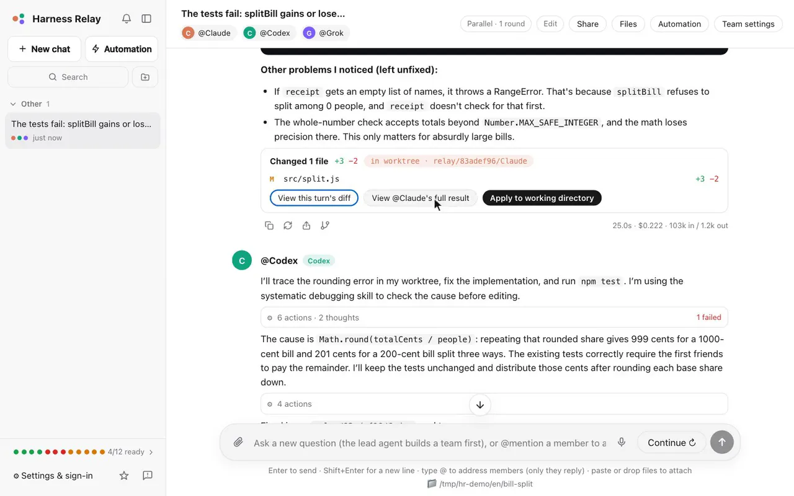

Permissions and approvals
You decide what the agents may do on their own. Anything beyond that comes to you as a card in the chat, and every change they make to your files is listed, ready to review.
The permission levels
Each conversation has one File permission, shared by all its members. You choose it on the New chat page, and can change it later in Team settings.
| Level | What agents do without asking |
|---|---|
| Read-only | Read, search, and look things up on the web. They change no file. |
| Edit | Also change files in the working directory and run project commands such as tests and builds. Pushing and publishing are not included. |
| Approve for me | What Edit does. Anything beyond it is first reviewed by the lead agent: what it judges safe goes ahead, and only what it finds potentially unsafe asks you. Pushing and publishing always ask. |
| Full access | Everything, without asking. Use it only in folders you trust. |
Exactly what runs without asking differs a little from one agent to another: an agent that has no sandbox asks you before every command below full access, tests and builds too.
In edit mode, tests, builds and project scripts run code the agents can change. Use edit for code you trust; for code or instructions you don't trust, use read-only. Edit mode is not allowed in your home folder itself: choose a project folder.
Actions beyond the permission
When an agent wants to do something its permission does not cover, such as installing a package, pushing code or writing outside the working directory, the chat setting Actions beyond the permission decides what happens:
- Ask me (the default): the chat asks you, and the agent waits for your answer.
- Refuse automatically: the action is refused right away; the agent is told, and tries another way.
With full access there is nothing beyond the permission, so the setting is not shown. With Approve for me it is not shown either: the lead agent answers first, and you answer the rest.
Approval cards
With Ask me, the agent's reply shows a card: what it wants to do (the exact command, file, address or host) and why. When allowing it would run a command outside the sandbox, the card says so.

- Allow: just this once.
-
Always allow "…" in this chat: this and later requests like it, for the rest of the conversation. For
a command, that means the same program and subcommand, such as
npm install. A command line that changes what decides what runs (PATH=…, say) is allowed again only exactly as it is: Always allow this exact command in this chat. - Decline: you can first type what the agent should do instead. Some agents get your note and carry on; others only learn that you declined, or end their turn, so then say what to do in your next message.
While a card waits, a bar above the message box points to it, the sidebar marks the conversation Needs you, and the browser tab's title counts the conversations that need you. Pressing Stop declines everything still waiting.
With Approve for me, the lead agent reviews each card first, reading your messages in the chat as what you want; the card says Lead agent reviewing, and you can answer it yourself meanwhile. What it approves goes ahead, the card saying Approved for you by the lead agent and why. What it finds potentially unsafe, or could not review, waits for you with its reason; one it found potentially unsafe can then be allowed this once only, never always. Pushing and publishing always wait for you. Each review takes a few seconds of the lead agent's model.
What the sandboxes do
Below full access, most agents run their commands inside a sandbox, a fence your operating system puts around a program. It lets them write only in the working directories and temporary folders, and keeps them out of your browsers' data and Harness Relay's own database. Depending on the agent, it also keeps commands off the network or asks you before they reach a new host.
- The open-source agents run in Harness Relay's own sandbox.
- An agent that has no sandbox asks you before every command instead.
- When a sandbox lacks what it needs, the command fails: it never runs outside the sandbox. Harness Relay can install what is missing for you: see Install.
What each sandbox covers differs by agent and by system. On native Windows only Codex and Copilot have one that works, and Claude Code runs its commands without one there. The technical docs list it agent by agent.
The files you list as protected paths in team checks are fenced off too: Claude Code, Codex, Cursor, Copilot, Antigravity and the open-source agents refuse to write them before it happens, each as far as it can (fewer of them with full access, and on Linux not always a file made during the turn). Reading them stays allowed. Grok and Muse Code do not refuse them yet; whatever gets through is found once the team has answered.
The outbox
The built-in Obsidian tools put every proposed Markdown write in the outbox, even with Full access. Review the note’s path and contents, then choose Create note, Save changes or Discard. If the file has changed since the edit was proposed, the card reports the conflict and keeps the newer version. Review an Obsidian edit
When an agent uses Harness Relay's own tools to send something to other people, including direct Slack or Teams posts, mail and event invitations, nothing goes out in its turn, whatever the permission. Its reply shows a card with what would be sent, field by field, as it will go out:
- Send sends it as shown, from your account.
- Discard drops it.
Until you answer, the conversation is marked Needs you and you are notified, as for an approval; the agent does not wait, so you can send it later. Tools: browser, mail and calendar
Secrets and fixed commands
Agents never ask you to paste a secret (an API token, an app secret, a password) in the chat, type it in a terminal or put it in a file. They ask with a card: its masked field keeps the value in this computer's credential store, for that working directory. The team is told which secrets you gave, never their values, and no agent's sandbox can read them. Harness Relay never needs the password of your own accounts.
When the value is on a web page (a token generator), choose Open a browser for you alone on the card: a browser that no agent drives or reads, deleted when you close it, shown in the chat, so it works from your phone too. It starts signed in to no site: sign in there first if the page needs it (some sites, Meta's developer pages among them, show a signed-out visitor an error page instead of asking). Select the value on the page and choose Save selection as its name: it goes straight to the card, never through the chat. On the computer Harness Relay runs on, you can also open the page in your own browser and paste the value.
A script that needs a secret, or should run on a schedule, comes as a fixed command card: the command line, the hosts it may reach and the secrets it gets. Harness Relay, not an agent, runs it:
- always in its own sandbox, whatever the permission: it writes only in the working directory and reaches only the hosts listed;
- its secrets in a file only it can read, and its output with every secret replaced by ••••;
- only with the code you looked at before saving it (Show the code it runs), and only while the code in its folder is as you saved it: once an agent changes the script, the card shows you the diff, and it runs again only when you approve it;
- when you click Try it (what you type in Input for this run is what it reads, such as the text of a post), Send on its outbox card, or on an automation's times (Run a fixed command first), where exit code 0 sends nothing and runs no model.
A later proposal of the same name replaces a card you have not saved yet. Settings → Secrets and commands lists each working directory's secrets, by name only (Replace or Remove one), and its fixed commands with their last run. Fixed commands do not run on native Windows yet. A command you allow outside a sandbox, and every agent with full access, runs with your rights. Automations
Commands you run yourself
Some steps only you can take at a command line: a sign-in that shows a link or a code (gcloud auth login --no-launch-browser,
npm login) or a password prompt (sudo -A). Agents cannot type into the commands they run, so an agent asks you
to run it yourself instead: its reply shows a Run a command yourself card with the command and why, and the team waits for you.
- Start runs it with your rights on this computer, outside every agent's sandbox, in an empty folder of its own, or in the working directory if you choose it there (the card then lists the configuration files, git hooks and installed programs it may load, which agents can change, and does not start once one of them changed). Nothing runs until you click it, and a card an automation's run proposed cannot be started.
-
While it runs, the card shows its output with the page to open and the code to enter picked out. Type a line and press Enter to send it;
with Hide what I type it stays off the card and is masked should the program print it.
sudo -A, ssh and git ask through Harness Relay's password helper, on the card. Cancel stops it, and it stops by itself after 15 minutes. - Send the output to the team posts how it ended and its masked output as your answer. Until then the agents see nothing of it.
What a sign-in saves goes where the program keeps it, usually your home folder, which agents below full access can read. It has no terminal, so a full-screen program cannot be answered, and it does not run on native Windows yet.
Review and apply changes
When an agent changes files, its reply ends with a card listing them, each marked A (added), M (modified) or D (deleted), with the lines added and removed. View this turn's diff shows exactly what the agent changed in that turn: each file in a section of its own, folded, so you see at once which files changed and open the ones you want to read (or Expand all).
Parallel mode: pick a result
In parallel mode each agent works in a copy of its own (a git worktree), so they cannot overwrite each other, and your working directory is not touched. Its card says in worktree, and the agent's latest card also has:
- View @name's full result: everything that agent changed since the round started.
- Apply to working directory: copies that result into your folder. Nothing is committed: check the changes with your usual tools and commit them yourself.

Once you apply one result, the others are marked out of date, and the next round starts from your updated folder. If your folder changed in a way that conflicts with the result, nothing is applied and you are told why: ask an agent to redo the work on top of the current state.
When the chat has team checks, Harness Relay checks a copy of your folder with the result applied. If the check fails, fix the result and retry or choose Apply anyway. If the result changes settings the commands read, review them and choose Confirm, run the commands and apply if they pass.
How your folder stays safe
-
In edit mode and full access, a working directory that is not a git repository yet becomes one
(
git init), so every change can be recorded. Harness Relay never commits to your branch. - In roundtable and relay mode the agents change your folder directly, in turn, and each reply records which files it changed. Another chat can work on the same folder meanwhile: its team works in a copy of the folder of its own (a worktree its agents share), says so in the chat, and goes on there until you apply its result, as you apply a parallel result.
Harness Relay records what changed, but does not undo it: editing an earlier message or retrying a reply does not restore the files its replies changed. Commit what you want to keep.